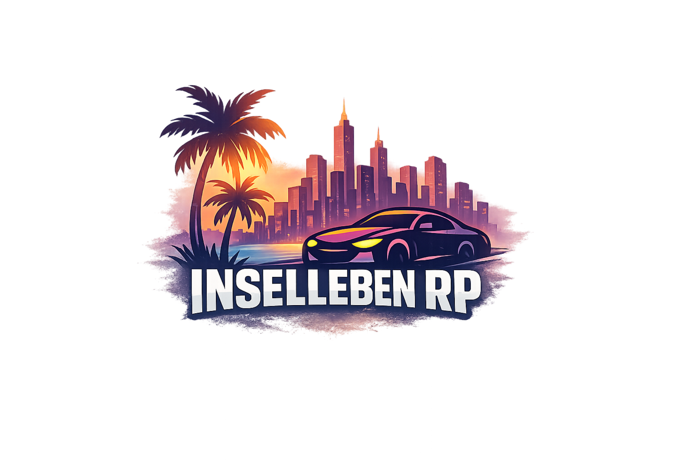
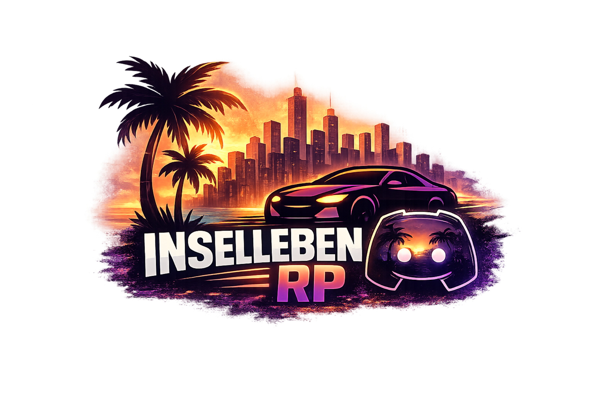
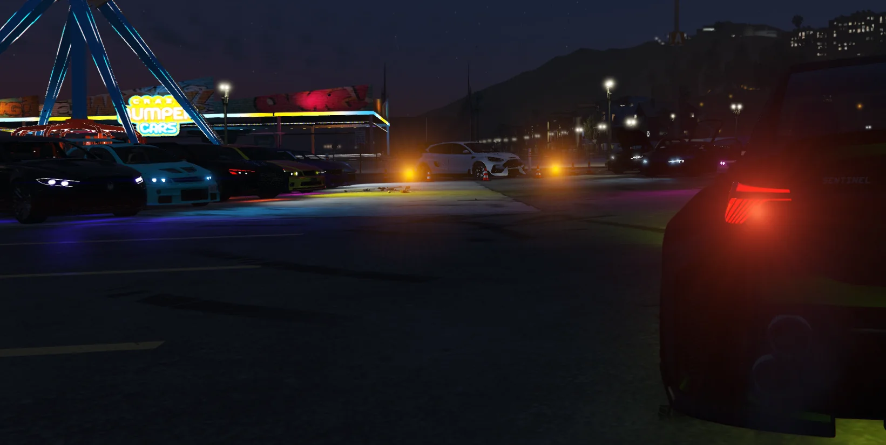
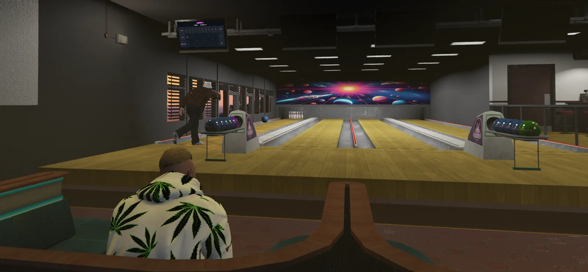
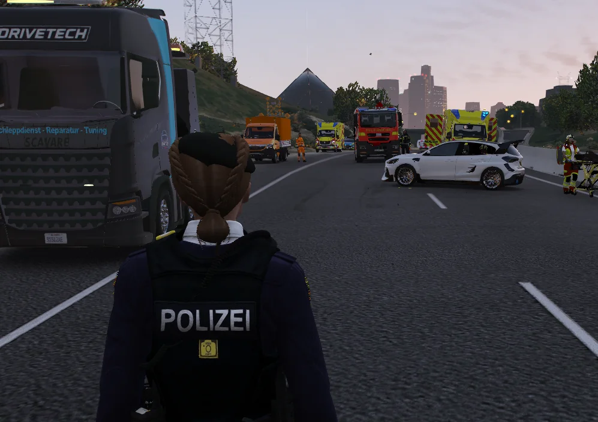
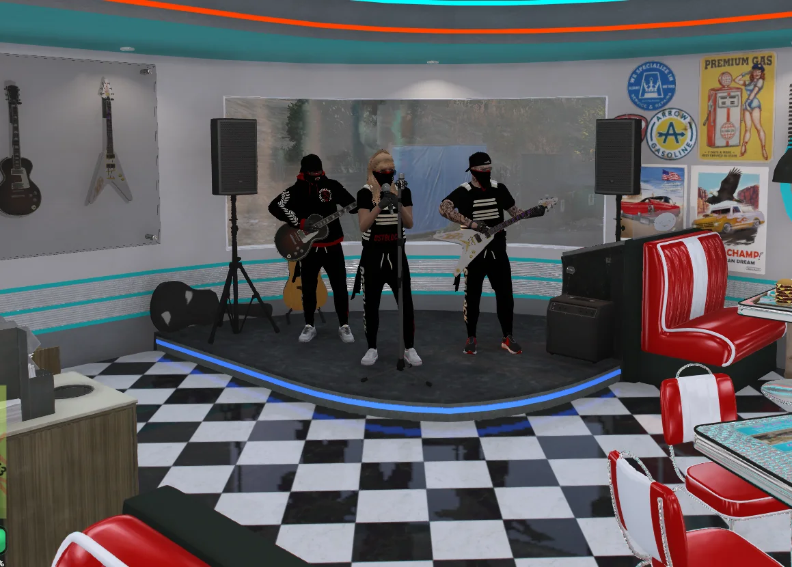
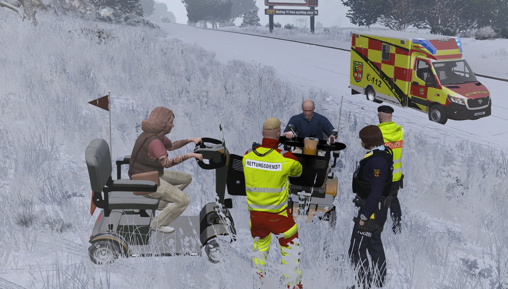
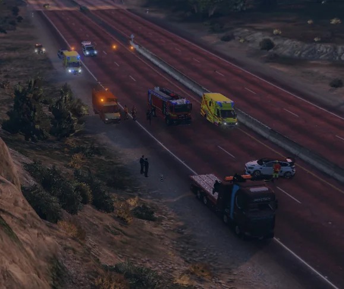
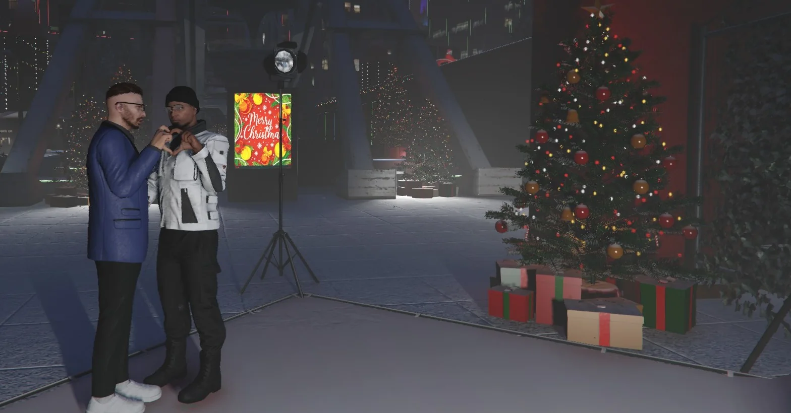

Inselleben RP
Server online
0 / 64

Atmosphäre. Charakter. Geschichten.

Inselleben RP will sich lebendig, strukturiert und langfristig anfühlen. Genau deshalb steht nicht stumpfes Chaos-RP im Mittelpunkt, sondern eine Spielwelt, in der legale und illegale Wege, Unternehmen, Fraktionen und Charaktere glaubwürdig ineinandergreifen.

Schon dieser Stand soll klar zeigen, worauf der Auftritt einzahlen soll: Qualität, Atmosphäre, Ordnung und eine Welt, die sich bewohnt anfühlt.
Geschichten, Entscheidungen und Charaktere stehen über kurzfristigem Effektspiel.
Legale und illegale Spielweisen sollen spannend, nachvollziehbar und gleichwertig tragfähig sein.
Tropischer Sunset-Look, lila Glasflächen und ein eigener Markencharakter statt 08/15-Serverseite.
Regelwerk, Team und Einstieg werden klar und zugänglich aufbereitet.
Der Austausch mit Spielern ist Teil der Identität und kein Nebenthema.
Die Seite ist so aufgebaut, dass spätere Live-Elemente schon vorbereitet sind.
Neue Spieler sollen sofort sehen, dass Inselleben RP mehr ist als nur hübsche Kulisse.
Polizei, Justiz und strukturierte Abläufe mit klarer Verhältnismäßigkeit und Spieltiefe.
Rettung und Reaktion als echter Teil der Welt, nicht nur als Pflichtprogramm.
Arbeit, Aufbau und wirtschaftliche Wege sollen das RP stützen und nicht nur Füllmaterial sein.
Auch ohne Fraktion soll es Raum für eigene Geschichten, Kontakte und Charakterentwicklung geben.
Spannendes Crime-RP mit Grenzen, Identifizierbarkeit und echtem Risiko statt blindem Chaos.
Events, Begegnungen und spontane Situationen sollen Teil des Servergefühls werden.
Die Galerie nutzt bereits deine hochgeladenen Community-Bilder und gibt V1 direkt echtes Leben.

Gemeinsam statt beliebig – genau so soll sich die Insel anfühlen.

Starke Situationen, die Gewicht haben und nicht nach fünf Minuten verpuffen.

Wenn Rollen ineinandergreifen, entsteht genau die Dynamik, für die Inselleben RP stehen soll.

Nicht nur Kulisse – sondern eine Welt, in der Situationen weitergedacht werden.

Die Insel soll nicht leer wirken, sondern echte Eindrücke hinterlassen.

Von ersten Begegnungen bis zu großen Szenen – hier soll Geschichte entstehen.
Der Discord ist die erste Anlaufstelle für Einstieg, Infos und Community.
GTA V + FiveM sind die Grundlage für den Einstieg.
Bevor es losgeht, sollten die wichtigsten Grundlagen sitzen.
Dann heißt es: Charakter bauen, Welt kennenlernen und losspielen.
Discord, Serverzugang, Regelwerk und erste Struktur stehen schon. Die dynamischen Erweiterungen können danach Schritt für Schritt folgen.